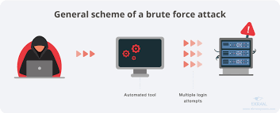

A cyber attack refers to an action designed to target a computer or any element of a computerized information system to change, destroy, or steal data, as well as exploit or harm a network. Cyber attacks have been on the rise, in sync with the digitization of business that has become more and more popular in recent years. While there are dozens of different types of attacks, the list of cyber attacks includes the 20 most common examples.
A denial-of-service (DoS) attack is designed to overwhelm the resources of a system to the point where it is unable to reply to legitimate service requests. A distributed denial-of-service (DDoS) attack is similar in that it also seeks to drain the resources of a system. A DDoS attack is initiated by a vast array of malware-infected host machines controlled by the attacker. These are referred to as “denial of service” attacks because the victim site is unable to provide service to those who want to access it.
With a DoS attack, the target site gets flooded with illegitimate requests. Because the site has to respond to each request, its resources get consumed by all the responses. This makes it impossible for the site to serve users as it normally does and often results in a complete shutdown of the site.
DoS and DDoS attacks are different from other types of cyber attacks that enable the hacker to either obtain access to a system or increase the access they currently have. With these types of attacks, the attacker directly benefits from their efforts. With DoS and DDoS network attacks, on the other hand, the objective is simply to interrupt the effectiveness of the target's service. If the attacker is hired by a business competitor, they may benefit financially from their efforts.
Man-in-the-middle (MITM) types of cyber attacks refer to breaches in cybersecurity that make it possible for an attacker to eavesdrop on the data sent back and forth between two people, networks, or computers. It is called a “man in the middle” attack because the attacker positions themselves in the “middle” or between the two parties trying to communicate. In effect, the attacker is spying on the interaction between the two parties.
In a MITM attack, the two parties involved feel like they are communicating as they normally do. What they do not know is that the person actually sending the message illicitly modifies or accesses the message before it reaches its destination. Some ways to protect yourself and your organization from MITM attacks is by using strong encryption on access points or to use a virtual private network (VPN).
A phishing attack occurs when a malicious actor sends emails that seem to be coming from trusted, legitimate sources in an attempt to grab sensitive information from the target. Phishing attacks combine social engineering and technology and are so-called because the attacker is, in effect, “fishing” for access to a forbidden area by using the “bait” of a seemingly trustworthy sender.

To execute the attack, the bad actor may send a link that brings you to a website that then fools you into downloading malware such as viruses, or giving the attacker your private information. In many cases, the target may not realize they have been compromised, which allows the attacker to go after others in the same organization without anyone suspecting malicious activity. You can prevent phishing attacks from achieving their objectives by thinking carefully about the kinds of emails you open and the links you click on. Pay close attention to email headers, and do not click on anything that looks suspicious. Check the parameters for “Reply-to” and “Return-path.” They need to connect to the same domain presented in the email.
A whale-phishing attack is so-named because it goes after the “big fish” or whales of an organization, which typically include those in the C-suite or others in charge of the organization. These individuals are likely to possess information that can be valuable to attackers, such as proprietary information about the business or its operations. If a targeted “whale” downloads ransomware, they are more likely to pay the ransom to prevent news of the successful attack from getting out and damaging their reputation or that of the organization. Whale-phishing attacks can be prevented by taking the same kinds of precautions to avoid phishing attacks, such as carefully examining emails and the attachments and links that come with them, keeping an eye out for suspicious destinations or parameters.
With ransomware, the victim’s system is held hostage until they agree to pay a ransom to the attacker. After the payment has been sent, the attacker then provides instructions regarding how the target can regain control of their computer. The name "ransomware” is appropriate because the malware demands a ransom from the victim.
In a ransomware attack, the target downloads ransomware, either from a website or from within an email attachment. The malware is written to exploit vulnerabilities that have not been addressed by either the system’s manufacturer or the IT team. The ransomware then encrypts the target's workstation. At times, ransomware can be used to attack multiple parties by denying access to either several computers or a central server essential to business operations.
Affecting multiple computers is often accomplished by not initiating systems captivation until days or even weeks after the malware's initial penetration. The malware can send AUTORUN files that go from one system to another via the internal network or Universal Serial Bus (USB) drives that connect to multiple computers. Then, when the attacker initiates the encryption, it works on all the infected systems simultaneously. In some cases, ransomware authors design the code to evade traditional antivirus software. It is therefore important for users to remain vigilant regarding which sites they visit and which links they click. You can also prevent many ransomware attacks by using a next-generation firewall (NGFW) that can perform deep data packet inspections using artificial intelligence (AI) that looks for the characteristics of ransomware.
Passwords are the access verification tool of choice for most people, so figuring out a target’s password is an attractive proposition for a hacker. This can be done using a few different methods. Often, people keep copies of their passwords on pieces of paper or sticky notes around or on their desks. An attacker can either find the password themselves or pay someone on the inside to get it for them.
An attacker may also try to intercept network transmissions to grab passwords not encrypted by the network. They can also use social engineering, which convinces the target to input their password to solve a seemingly “important” problem. In other cases, the attacker can simply guess the user’s password, particularly if they use a default password or one that is easy to remember such as “1234567.
Attackers also often use brute-force methods to guess passwords. A brute-force password hack uses basic information about the individual or their job title to try to guess their password. For example, their name, birthdate, anniversary, or other personal but easy-to-discover details can be used in different combinations to decipher their password. Information that users put on social media can also be leveraged in a brute-force password hack. What the individual does for fun, specific hobbies, names of pets, or names of children are sometimes used to form passwords, making them relatively easy to guess for brute-force attackers.
A hacker can also use a dictionary attack to ascertain a user’s password. A dictionary attack is a technique that uses common words and phrases, such as those listed in a dictionary, to try and guess the target's password.One effective method of preventing brute-force and dictionary password attacks is to set up a lock-out policy. This locks out access to devices, websites, or applications automatically after a certain number of failed attempts. With a lock-out policy, the attacker only has a few tries before they get banned from access. If you have a lockout policy in place already and discover that your account has been locked out because of too many login attempts, it is wise to change your password.
If an attacker systematically uses a brute-force or dictionary attack to guess your password, they may take note of the passwords that did not work. For example, if your password is your last name followed by your year of birth and the hacker tries putting your birth year before your last name on the final attempt, they may get it right on the next try.Structured Query Language (SQL) injection is a common method of taking advantage of websites that depend on databases to serve their users. Clients are computers that get information from servers, and an SQL attack uses an SQL query sent from the client to a database on the server. The command is inserted, or “injected”, into a data plane in place of something else that normally goes there, such as a password or login. The server that holds the database then runs the command and the system is penetrated.
If an SQL injection succeeds, several things can happen, including the release of sensitive data or the modification or deletion of important data. Also, an attacker can execute administrator operations like a shutdown command, which can interrupt the function of the database. To shield yourself from an SQL injection attack, take advantage of the least-privileged model. With least-privileged architecture, only those who absolutely need to access key databases are allowed in. Even if a user has power or influence within the organization, they may not be allowed to access specific areas of the network if their job does not depend on it.

For example, the CEO can be kept from accessing areas of the network even if they have the right to know what is inside. Applying a least-privileged policy can prevent not just bad actors from accessing sensitive areas but also those who mean well but accidentally leave their login credentials vulnerable to attackers or leave their workstations running while away from their computers.
With Domain Name System (DNS) spoofing, a hacker alters DNS records to send traffic to a fake or “spoofed” website. Once on the fraudulent site, the victim may enter sensitive information that can be used or sold by the hacker. The hacker may also construct a poor-quality site with derogatory or inflammatory content to make a competitor company look bad.
In a DNS spoofing attack, the attacker takes advantage of the fact that the user thinks the site they are visiting is legitimate. This gives the attacker the ability to commit crimes in the name of an innocent company, at least from the perspective of the visitor.
To prevent DNS spoofing, make sure your DNS servers are kept up-to-date. Attackers aim to exploit vulnerabilities in DNS servers, and the most recent software versions often contain fixes that close known vulnerabilities.
A brute-force attack gets its name from the “brutish” or simple methodology employed by the attack. The attacker simply tries to guess the login credentials of someone with access to the target system. Once they get it right, they are in.
While this may sound time-consuming and difficult, attackers often use bots to crack the credentials. The attacker provides the bot with a list of credentials that they think may give them access to the secure area. The bot then tries each one while the attacker sits back and waits. Once the correct credentials have been entered, the criminal gains access.
To prevent brute-force attacks, have lock-out policies in place as part of your authorization security architecture. After a certain number of attempts, the user attempting to enter the credentials gets locked out. This typically involves “freezing” the account so even if someone else tries from a different device with a different IP address, they cannot bypass the lockout.
It is also wise to use random passwords without regular words, dates, or sequences of numbers in them. This is effective because, for example, even if an attacker uses software to try to guess a 10-digit password, it will take many years of non-stop attempts to get it right.